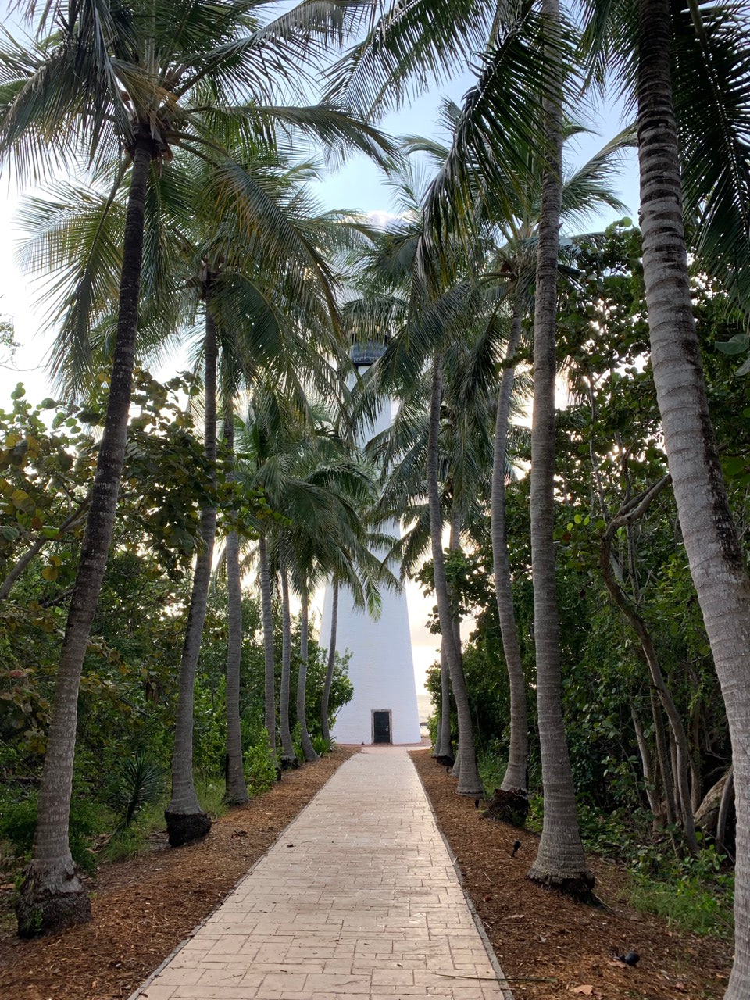
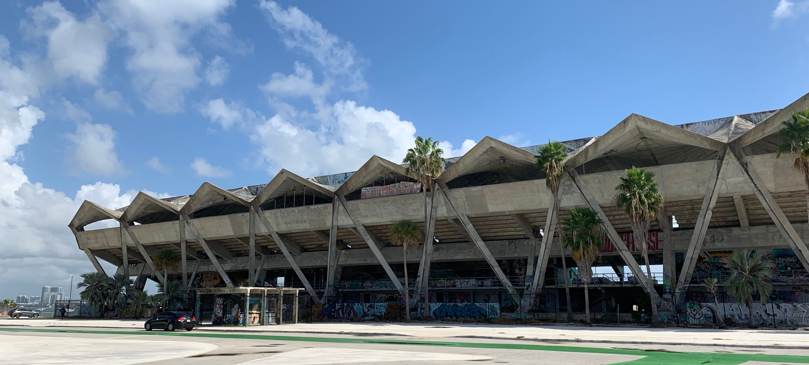
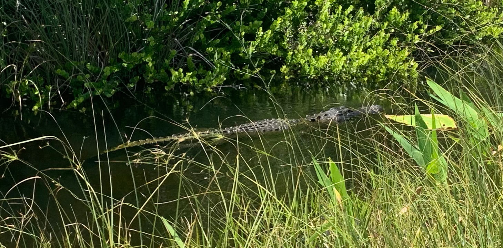

This trip began shortly after sunrise on Miami’s M Path, part of my old friend the East Coast Greenway. It had rained overnight and was still intermittently drizzling, but nothing so bad as to cancel plans. A few quick blocks brought me to the tollbooth for the Rickenbacker Causeway and the William M Powell bridge. Due to equal parts morning laziness and a slight fear (let’s say respect) of slick wet pavement, I walked the bridge’s incline. One of the great parts about this trail is that there’s a separate protected lane or sidewalk the entire distance, so you don’t have to take the green shoulder bike lane. Including the bridge!
From the apex, I could see all the way to the end of Key Biscayne, under dark and ominous clouds. The little weather app promised everything would be clear by the time I got there, so I pushed on. The sidewalk route through Crandon Park is actually its parking lot, but there was absolutely nobody there early in the morning. Then onto city sidewalks through the village of Key Biscayne and finally into Bill Baggs State Park. I did not have correct change ($2) to put in one of the traditional envelopes for hikers and bikers, so I went right up to the car toll window like a dummy and had him swipe my card.
Each leg of this trail flashed by quicker than I expected, and the segment from the park entrance to the lighthouse at the southern tip was the quickest. It was beautiful to skate along the coastline for a bit, and even catch a glimpse of Stiltsville far off on the horizon. Of course, when I reached the lighthouse, perfectly timed for its opening at 9AM, I learned that it is closed on Tuesdays and Wednesdays, i.e. no entrance to climb to the top. While a bummer, that combined with my early arrival meant no one else was there. Approaching the lighthouse down the palm-lined path, perfectly quiet and serene, was exceedingly cool.
On the way back, I decided to try the painted green bike lanes off the shoulder of the main road, and immediately regretted not having done so for the way down. I swear that the thick coat of paint makes the asphalt smoother, filling in its usually coarse texture. It felt like skating on glass. And I was never concerned that some Porsche or Maserati would sideswipe me from behind. I made it back in significantly less time, stopping only to admire the abandoned Miami Marine Stadium.
If it weren’t bright broad daylight and I wasn’t wearing a bright safety yellow shirt, I would’ve tried to break in. The west side still has original cement stairs leading up to a shoddy barricade, as opposed to the chain-link fence surrounding the rest of the property. But they have at least one security guard watching from the similarly-graffiti-covered ticket booth, and who knows how many more. The art was incredible though.
And here is where I hoped to transition into the second trail of the day, but I ran into security there as well. A park ranger at Shark Valley stopped me right before I put my board on the pavement, and angrily reminded me that skateboards are prohibited in all national parks. It had taken me over an hour to drive due west on Tamiami Trail into the heart of the Everglades, and I got a little angry back at him, challenging him on why bikes were deemed safe enough and skateboards weren’t. His reply, word for word, was “Because then it’d be like a beach out there, with skateboards, and roller blades, and scooters!” There was no fighting this guy. I rented a clunky cruiser bike and traveled the trail that way. It felt like going running with your Fitbit still at home — I don’t get credit for those 15 miles, since they weren’t by skateboard. But I did get to see a bunch of cool wildlife, like a heron picking up a snake in its beak and flying away, giant grasshoppers, and dozens of Florida Apple Snail shells abandoned by the path. And when I finally saw an alligator, mere feet away, it was all worth it.
